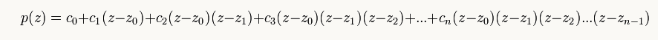

Universidad Nacional Autónoma de México
Facultad de Estudios Superiores Acatlán
División de Matemáticas e Ingenierías
Matemáticas Aplicadas y Computación
Esencia y Práctica de los Métodos Numéricos
Garrido Vázquez Fernanda
"No hay rama de la matemática, por abstracta que sea, que no pueda aplicarse algún día a la realidad."


Los métodos numéricos son una herramienta esencial en el arsenal del científico y el ingeniero modernos. Cuando nos enfrentamos a problemas matemáticos complejos, ya sea en física, ingeniería, economía u otras disciplinas, a menudo no podemos obtener soluciones exactas mediante métodos analíticos tradicionales. Aquí es donde entran en juego los métodos numéricos. Estos métodos nos permiten aproximarnos a soluciones precisas mediante cálculos computacionales. En lugar de depender únicamente de manipulaciones algebraicas o análisis matemático, recurrimos a algoritmos diseñados para iterar y mejorar continuamente nuestras aproximaciones. Esto es crucial en situaciones donde las ecuaciones son demasiado complejas para resolverlas directamente o cuando los conjuntos de datos son demasiado grandes para ser procesados manualmente.
Menú
- Método del Punto Fijo
- Ejemplo 1
- Método de Newton - Raphson
- Ejemplo 1
- Método de Lagrange
- Ejemplo 1
- Método de Diferencias Divididas
- Ejemplo 1
- Método de Newton - Hacia Delante
- Ejemplo 1
- Método de Newton - Hacia Atrás
- Ejemplo 1
- Método de Mínimos Cuadrados
- Ejemplo 1
- Método del Trapecio
- Ejemplo 1
- Método de Simpson 1/3
- Ejemplo 1
- Método de Simpson 3/8
- Ejemplo 1
UNIDAD 1
UNIDAD 2
UNIDAD 3
Método del Punto Fijo
El método del punto fijo es un algoritmo utilizado para encontrar las soluciones de una ecuación no lineal f(x)= 0 .Funciona transformando la ecuación original en una forma equivalente g(x)= x, donde g(x) es una función conocida como la "función de iteración". El proceso iterativo implica comenzar con una suposición inicial x0 y luego aplicar repetidamente la función g(x) a esta suposición para obtener una secuencia de valores x1,x2,x3,...,xn, Se espera que esta secuencia converja hacia la solución real de la ecuación original. La convergencia del método del punto fijo depende de la elección de la función g(x) y de la condición inicial x0, Si la función de iteración g(x) cumple con ciertas condiciones, como ser una función continua y tener una derivada acotada, y si x0 está lo suficientemente cerca de la solución, entonces el método del punto fijo puede converger hacia la solución de la ecuación original.
Método del Punto Fijo
ejemplo 1
Se presentará un ejemplo en el que considrando la siguiente función:
f(x)=x3-4x2-10
en el intervalo:
[1,2]
con la iteración del método de punto fijo se quiere encontrar la raíz, se considera:
x0=1.5.
Suponiendo que se elije:
xn+1=xn- [xn3+4xn2 -10
/8xn+3xn2]
Método del Punto Fijo
xn+1=xn- [xn3+4xn2 -10 /8xn+3xn2]
Método de Newton Raphson
El método de Newton-Raphson es una técnica iterativa utilizada para encontrar las raíces de una función. Se basa en la idea de aproximarse a la raíz de la función mediante una sucesión de estimaciones cada vez más precisas. En cada paso, el método utiliza la tangente a la curva de la función en el punto de estimación actual para calcular una mejor aproximación de la raíz. Este proceso se repite hasta alcanzar una precisión deseada o hasta que se cumpla algún criterio de convergencia. El método de Newton-Raphson es rápido y eficiente, pero su convergencia puede no estar garantizada en todos los casos y puede requerir una buena estimación inicial para funcionar correctamente.
Método de Newton Raphson
Para este método seguiremos los siguientes pasos:
1. Escoge un valor de x inicial.
Este valor es una estimación en donde
esperamos que haya una raíz.
2.Encuentra el valor de la función usando el valor de x del paso 1.
3.Encuentra el valor de la derivada de la función usando el valor de x del paso 1.
4.Usa los valores encontrados para actualizar la estimación de la raíz mediante la siguiente fórmula:
xn+1=xr-f(xr)/f'(xr)
5.Repite los pasos 2-4 hasta que la estimación de la raíz converja a un valor preciso.
Método de Newton Raphson
ejemplo 1
Para este ejemplo tenemos la ecuación:
x3-2x+1
Calculando la derivada tenemos:
f'(x)=3x2-2
Método de Newton Raphson
x3-2x+1
f'(x)=3x2-2
Método de Lagrange
La interpolación permite el cálculo de valores intermedios de datos experimentales que no tiene una función conocida que los represente. La interpolación polinomial consiste en determinar un polinomio de orden n que ajusta a n+1 datos. La interpolación de Lagrange es una de las alternativas que existen.
Método de Lagrange
ejemplo 1
Para este ejemplo tenemos la siguiente tabla:
| n | x | y |
|---|---|---|
| 1 | 1 | 0 |
| 2 | 4 | 1.39 |
| 3 | 6 | 1.79 |
Método de Lagrange
ejemplo 1
| n | x | y |
|---|---|---|
| 1 | 1 | 0 |
| 2 | 4 | 1.39 |
| 3 | 6 | 1.79 |
Ln(x)=(x-xn+1)(x-xn+2)/(xn-x1)(xn-xn+1)
Método de Diferencias Divididas
El método de diferencias divididas es una técnica fundamental en el campo de la interpolación y el análisis numérico. Se utiliza para aproximar polinomios que pasan a través de un conjunto de puntos dados. La idea básica es dividir la diferencia entre los valores de los puntos en intervalos sucesivos y utilizar estas diferencias para construir un polinomio interpolante.
Método de Diferencias Divididas
Para este método se sigue lo siguiente: La n-ésima diferencia dividida finita es:

Para lo cual se debe interpretar la tabla de diferencias
divididas, también como una aproximación a una derivada:
| i | xi | f[xi] | Primero | Segundo | Tercero |
|---|---|---|---|---|---|
| 0 | x0 | f[x0] | f[x1,x0] | f[x2,x1,x0] | f[x3,x2,x1,x0] |
| 1 | x1 | f[x1] | f[x2,x1] | f[x3,x2,x1] | |
| 2 | x2 | f[x2] | f[x3,x2] | ||
| 3 | x3 | f[x3] |
En la fórmula del polinomio, las diferencias divididas sirven para evaluar los coeficientes de cada término adicional para aumentar el grado.
Método de Diferencias Divididas
ejemplo 1
Para el ejercicio, es importante notar que las
distancias entre puntos para el «eje x» NO son equidistantes.
Se dispone de los datos (x, f(x)), en donde
x es un valor de inversión y f(x) es un valor de ganancia, ambos en miles de dólares:
| Inversión | Ganancia |
|---|---|
| 3.2 | 5.12 |
| 3.8 | 6.42 |
| 4.2 | 7.25 |
| 4.5 | 6.85 |
Método de Diferencias Divididas
ejemplo 1
| Inversión | Ganancia |
|---|---|
| 3.2 | 5.12 |
| 3.8 | 6.42 |
| 4.2 | 7.25 |
| 4.5 | 6.85 |
Método de Newton - Hacia Delante
El método de Newton hacia adelante es una técnica de interpolación numérica que estima valores intermedios en una serie de datos utilizando un polinomio de interpolación. Se basa en diferencias finitas para calcular los coeficientes del polinomio, lo que permite aproximar una función desconocida. Es especialmente útil cuando los puntos de datos están igualmente espaciados.
Método de Newton - Hacia Adelante
ejemplo
Para este método se utilizará el siguiente ejemplo:
| x | f(xi) |
|---|---|
| 1 | 2/3 |
| 3 | 1 |
| 5 | -1 |
| 6 | 0 |
Método de Newton - Hacia Adelante

Método de Newton - Hacia Atrás
En esencia, el método de Newton hacia atrás sigue el mismo principio que el método de Newton hacia adelante, pero comienza desde el punto final del conjunto de datos y se mueve hacia atrás. Esto significa que se utiliza la misma fórmula de diferencias divididas de Newton, pero con los valores de x y y organizados de manera inversa. Al igual que su contraparte hacia adelante, este método es útil para aproximar una función desconocida o suave a partir de un conjunto discreto de puntos de datos conocidos. Se utiliza en diversas áreas como interpolación numérica, análisis de datos y aproximación de funciones.
Método de Newton - Hacia Atrás
ejemplo
Para este método se utilizará el mismo ejemplo:
| x | f(xi) |
|---|---|
| 1 | 2/3 |
| 3 | 1 |
| 5 | -1 |
| 6 | 0 |
Método de Newton - Hacia Atrás
ejemplo
Este método comienza desde el punto final del conjunto de datos y se mueve hacia atrás. Esto significa que se utiliza la misma fórmula de diferencias divididas de Newton, pero con los valores de x y y organizados de manera inversa.
Método de Mínimos Cuadrados
El método de mínimos cuadrados es una técnica fundamental en el análisis estadístico y matemático que se utiliza para encontrar la "mejor" relación entre dos conjuntos de datos. Su objetivo es encontrar una función que minimice la suma de los cuadrados de las diferencias entre los valores observados y los valores predichos por la función. Este método es ampliamente utilizado en diversos campos, como la econometría, la ingeniería, la física y la ciencia de datos, para ajustar modelos a datos experimentales o observacionales. La clave del método radica en encontrar los coeficientes de la función que minimizan la discrepancia entre los datos y la función modelada, lo que proporciona una manera eficaz de estimar relaciones y hacer predicciones.
Método de Mínimos Cuadrados
ejemplo
En este método utilizaremos el siguiente ejemplo: Calcule la recta de regresión para mínimos cuadrados para los siguienets valores:
| x | y |
|---|---|
| 1 | 1 |
| 3 | 2 |
| 4 | 4 |
| 6 | 4 |
| 8 | 5 |
| 9 | 7 |
Método de Mínimos Cuadrados
ejemplo
Método del Trapecio
El método del trapecio es una técnica de integración numérica que se utiliza para aproximar el valor de una integral definida. La idea principal detrás de este método es dividir el área bajo una curva en múltiples trapecios, cuyas áreas son más fáciles de calcular. Luego, sumamos estas áreas para obtener una aproximación del área total bajo la curva. Para aplicar el método del trapecio, primero dividimos el intervalo de integración en subintervalos igualmente espaciados. Llamamos a la longitud de cada subintervalo "h". Luego, aproximamos la integral en cada subintervalo utilizando la fórmula del área de un trapecio.
Método del Trapecio
ejemplo
Para este método tenemos el siguiente ejemplo:
| x | f(x) |
|---|---|
| 1.000 | 1.000 |
| 2.000 | 0.500 |
| 3.000 | 0.333 |
| 4.000 | 0.250 |
| 5.000 | 0.200 |
Método del Trapecio
ejemplo
Método de Simpson 1/3
El método de Simpson 1/3 es una técnica de integración numérica utilizada para aproximar el valor de una integral definida. Se basa en la idea de aproximar la curva de la función mediante segmentos de parábolas, utilizando puntos específicos dentro del intervalo de integración. La regla 1/3 se refiere a la aproximación de la integral mediante la evaluación de la función en dos puntos extremos y uno medio dentro de cada subintervalo, y luego aplicando una fórmula que involucra estos puntos para calcular el área bajo la curva. Este método es una mejora sobre la regla del trapecio, ya que utiliza polinomios de segundo grado para una mejor aproximación en ciertos casos.
Método de Simpson 1/3
ejemplo
Para este método utilizaremos el siguiente ejemplo:
| x | f(x) |
|---|---|
| 1.000 | 1.000 |
| 2.000 | 0.500 |
| 3.000 | 0.333 |
| 4.000 | 0.250 |
| 5.000 | 0.200 |
Método de Simpson 1/3
ejemplo
Método de Simpson 3/8
El método de Simpson 3/8 se diferencia del método de Simpson 1/3 en que utiliza tres puntos equidistantes para cada subintervalo en lugar de dos. Esto da como resultado una mayor precisión en la aproximación.El proceso de aplicación del método de Simpson 3/8 implica dividir el intervalo de integración en subintervalos, calcular los valores de la función en los extremos y en dos puntos adicionales dentro de cada subintervalo, y luego aplicar la fórmula de Simpson 3/8 para obtener la aproximación de la integral.
Método de Simpson 3/8
ejemplo
Para este método utilizaremos el siguiente ejemplo:
| n | x |
|---|---|
| 0 | 1.000 |
| 1 | 1.6667 |
| 2 | 2.3333 |
| 3 | 3.0000 |
| 4 | 3.6667 |
| 5 | 4.3333 |
| 6 | 5.0000 |
Método de Simpson 3/8
ejemplo